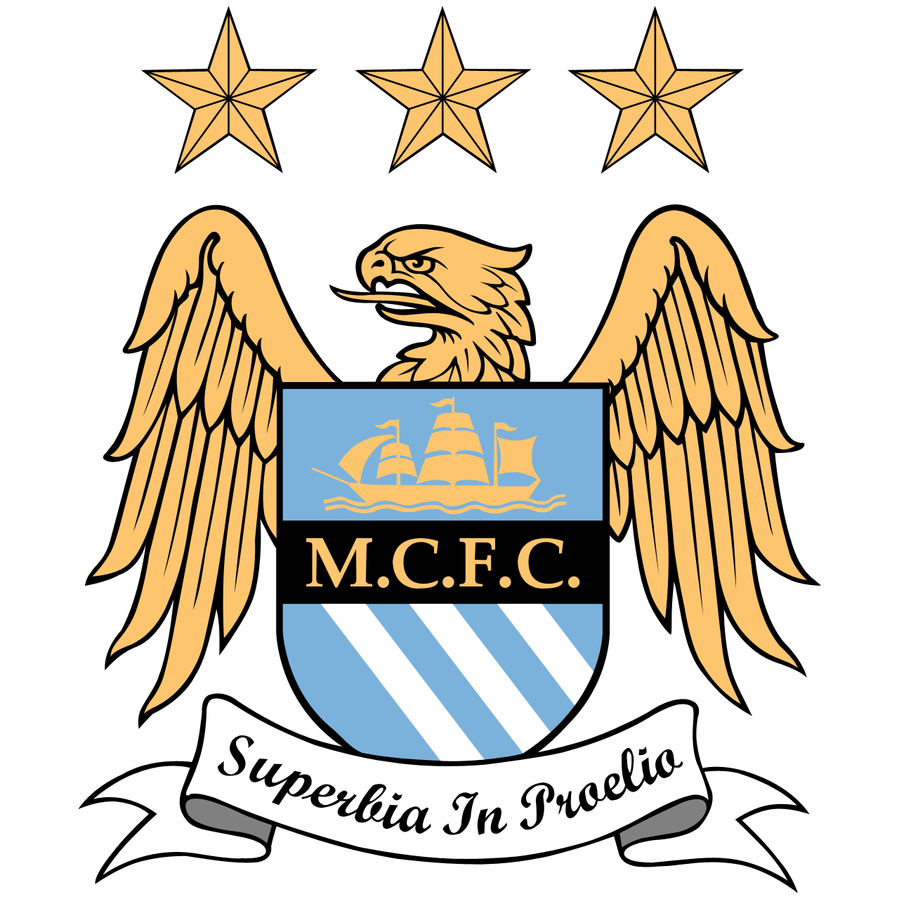

| Rank | Teams | ||||
|---|---|---|---|---|---|
| CL | Manchester City | Arsenal | Liverpool |  |
Aston Villa |
| EL | Tottenham | Newcastle | Manchester Utd | Chelsea | West Ham |
| TF | Brighton | Wolves | Bournemouth | Fulham | Crystal Palace |
| MT | Brentford | Everton | Nottingham Forest | Leicester City | |
| RB | Ipswich Town | Southampton | Leeds United | Burnley | Sheffield Utd |
| KEY: CL = Champions League, EL = Europa League, TF = Top Four, MT = Mid-Table, RB= Relegation Battle | |||||
Reflection
Module 07 was quite amazing learning about Forms and Tables, and I really enjoyed doing the lab. Being an avid soccer fan,it was not difficult for me
to decide what to use as an example in this lab. Sports is one area where ranking is very common and constantly changing. So, I quickly decided to use the
English premier league as a case study.However, the ranking system is kind of made up, and I provided a legend to explain the terms even to they
represent the different ways that teams are categorized in the European league
Also, I wish to state that I did use google search engines and gemini to develop and organize my thoughts especially on the contact.html. It helped me
generate what kind of information will be suitable for my sport theme ranking.